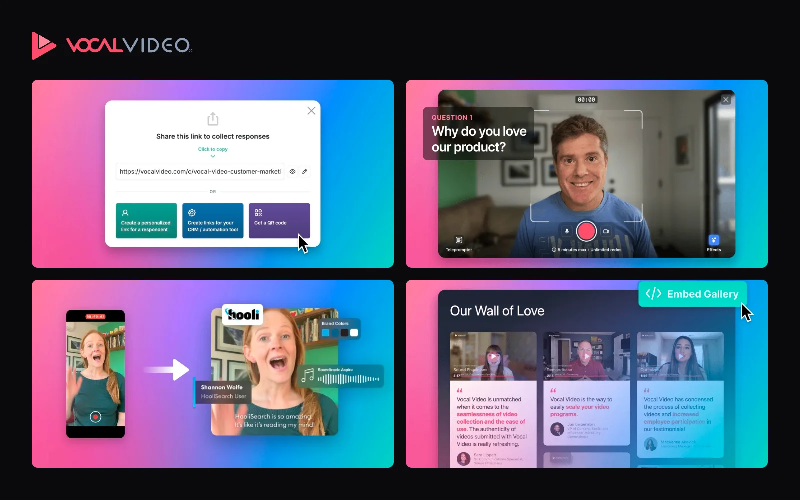
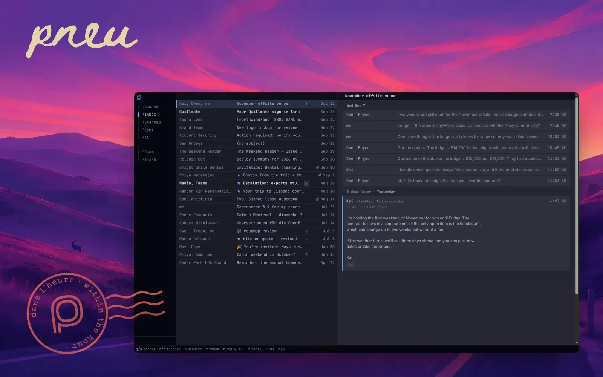
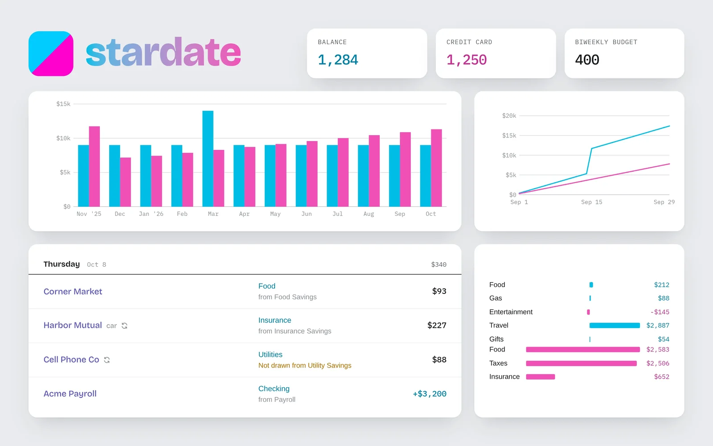
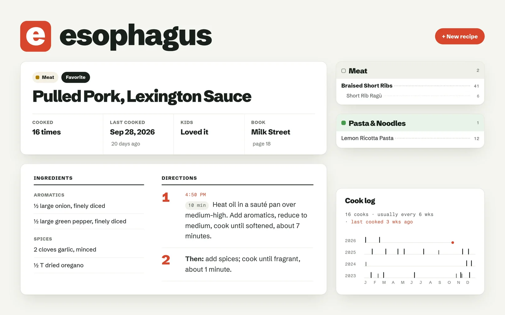
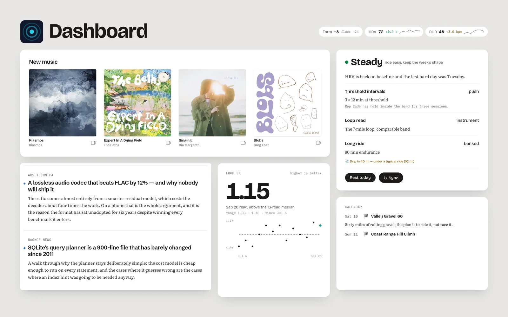
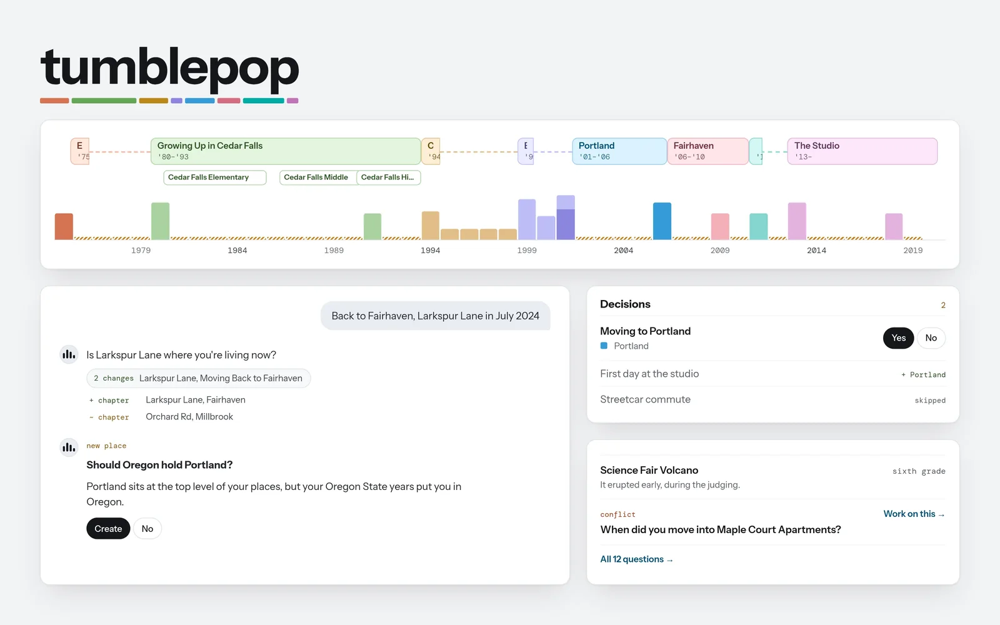
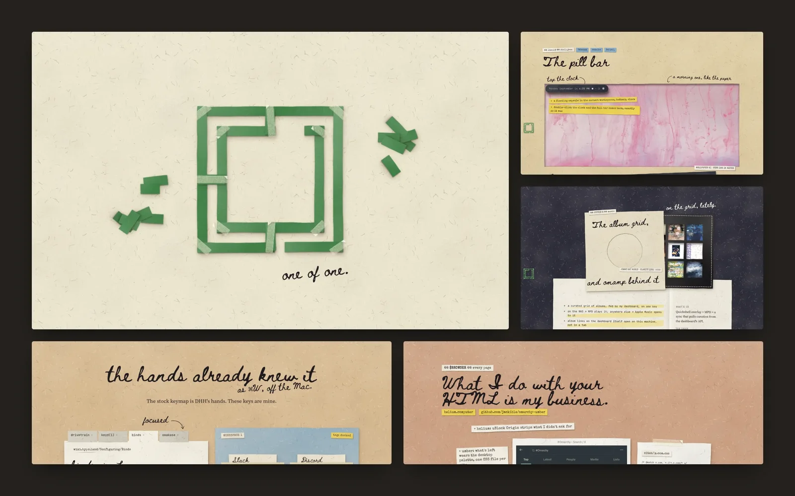

Vocal Video
Automagic Video Testimonials
Collect video testimonials at scale with a simple link. Studio-grade videos automatically generated.

Hi, I’m Jordan. I was a programmer for twenty years, and now I'm whatever you call someone with technical skills and a Claude subscription. I was an early employee at TechValidate and currently a cofounder at Vocal Video.
I live in Petaluma, California.
Automagic Video Testimonials
Collect video testimonials at scale with a simple link. Studio-grade videos automatically generated.

Gmail, designed for Omarchy
A keyboard first mail client, with local storage. Designed to match your Omarchy theme and includes a top bar notifier. Conceirge setup via your agent.

Nearly 20 years of personal finance
When learing Ruby on Rails in the early days, one of my first applications was a double entry bookkeeping application for my personal finances. I've tracked every transaction since. I've integrated every techical innovation of Rails from version 2 to 8.

Never forget a recipe
I love cooking and have amassed a collection of great and go-to recipes. I noticed I'd often cook something a few times and forget about it; maybe seasonality or didn't quite have it dialed in. So I started tracking every recipe, each time it was cooked, and developed a definitive version.

A personal command center
Outside of finance and cooking, this app does it all. An agent reads my RSS feed and searches out new sources. It compiles a digest four times a day, so I don't need to scroll news any more. A personal trainer collects all my running and cycling data, tracks progress, and recommends a daily workout. A music agent monitors new releases and compiles my favorite radio shows. Each day I get a grid of albums to review, which omamp plays on the desktop, and my all time favorites are enshrined in the book.

Remember when?
A long standing idea, finally made possible with agents. We all remember bits and pieces of the past. Our own personal timeline is fuzzy about dates and things we've forgotten. tumblepop is an agent mediated approach to catalogue all the memories of your life and sharing with your friends to collectively assmeble the jigsaw puzzle of history.

Everything I run on top of Omarchy
Omarchy is one person’s choices; this is mine on top of them. The desk: the Drivetrain theme, whose wallpapers follow the sun and the weather; Swatch, a theme picker that retints the whole desktop live as you scrub; a bar cut down to a single pill; and vim keys everywhere. What comes in: Umber, which puts the desktop’s palette on every web page, and omamp, which plays my almost 30 year mp3 library, with Apple Music for new releases.
